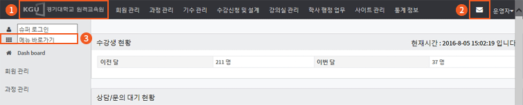
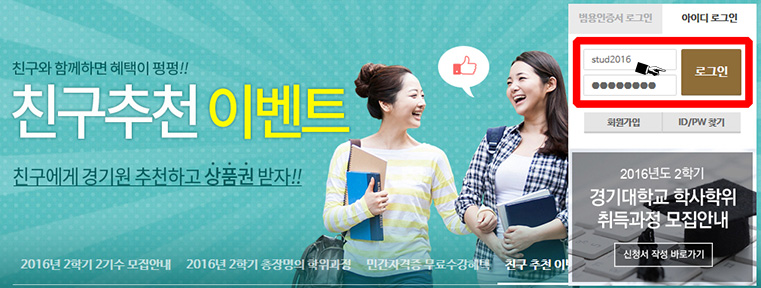
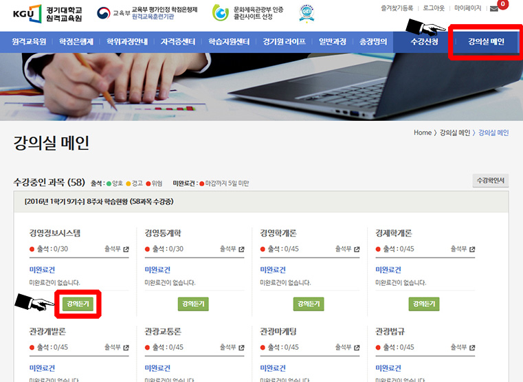
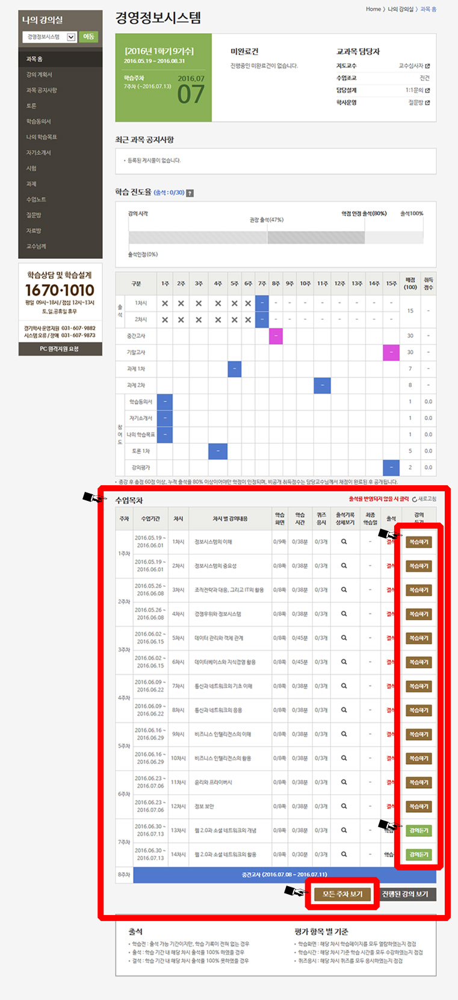
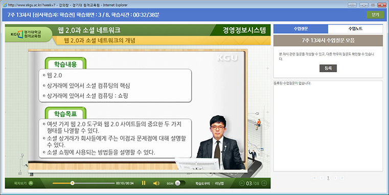
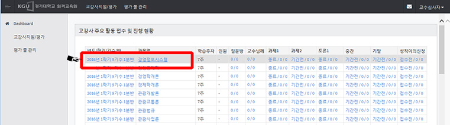

제16차 원격수업 기반 학습과정단위 평가인정을 위한 1차 원격서면평가 안내 팝업
국가평생교육진흥원 평가단 담당자님 방문을 환영합니다.
제16차 원격기반 학습과정단위 평가인정을 위한 2차 서면 평가 관련 안내를 드립니다.
“ 경기대학교 원격교육원은 공정하고 엄정한 신뢰성 있는 운영을 기반으로 각 전공의 국내 최고 교수진을 활용하여 양질의 콘텐츠를 제공하고 있으며, 변화되는 교육부 및 학점은행제의 제도 변경에 많은 관심을 가지고, 지속적으로 사용자 교수/학습 환경 및 처우를 개선하기 위한 노력을 계속하고 있습니다.
또한, 기존의 “사회복지사”, “보육교사” 와 같이 편중된 교과목 및 전공에서 벗어나, 편대학 부설의 장점을 최대한 살리며, 모교의 특화된 관광경영학 전공을 학점은행제로 제공함으로써, 학점은행제 전공의 다양성도 꾀하고 있습니다.
앞으로도 학점은행제도가 질적인 도약이 되는 발판으로 경기대학교 원격교육원이 되도록 노력하겠습니다.”
- 팝업 페이지 구성
- ① 공지사항: 현재 페이지
- ② 플랫폼 안내 : LMS, LCMS, CDMS 안내
- ③ 기관 특성화 및 질관리 : 기관 특성화 및 질 관리 요약 안내
- ④ 콘텐츠 확인(학습자): 학습자 계정으로 콘텐츠 확인 및 강의수강 방법
- ⑤ 콘텐츠 확인(교수자): 교수자 계정으로 콘텐츠 확인하는 방법
- ⑥ 콘텐츠 확인(관리자): 관리자 계정으로 콘텐츠 확인하는 방법
- ⑦ MAC 중복 예외 신청: MAC Address 중복 시 대응 방법 안내
- 사이트 계정 정보
구분 접속 주소 아이디 암호 관리자 http://www.ekgu.ac.kr/admin admin2016 2016admin 교수자 http://www.ekgu.ac.kr/prof prof2016 2016prof 학습자 http://www.ekgu.ac.kr/ stud2016 2016stud - 사이트 이용 시 유의 사항
- ① 다중 접속 불가능 – 예외처리 불가
- ② MAC 중복 예외 신청 – 심사 담당자 요청 시 처리 가능
2인 이상의 사용자가 동일한 MAC Address를 가진 장비에서 접속을 하고자 할 경우, MAC Address 중복 예외 신청하여 승인되어야만 사이트 이용이 가능함 - ③ 범용공인인증서 로그인 – 예외 처리 완료
- ④ 시험 응시를 위해서는 부정행위 방지 ActiveX가 설치되어야 하므로, Internet Explorer 브라우저 사용 권장
- ⑤ 디스플레이 해상도: 1366 x 768 이상 권장
- ⑥ 팝업 예외 처리 필수: 강의창 등 일부 컨텐츠가 팝업창으로 구성되어있음
- 공통 기능 안내
- ① 관리자 및 교수자 사이트
＊ 홈화면 이동 방법 - 화면 좌측 상단의 클릭
＊ 메시지 발송 도구 - 모든 리스트에서 가능, 회원 선택 후 우측 상단 클릭

- ② 관리자 사이트
- ＊ 메뉴 검색이동 - 메뉴 입력 상자에 키워드 입력하여, 해당 메뉴로 쉽게 이동 가능
- ① 관리자 및 교수자 사이트
- 교육원 담당자 연락처
- 담당자 : 이경애 (안종현)
- 전화 : (09시~18시) 031-249-9785, 031-607-9879
- 전화 : (18시~이후) 031-607-9879
경기대학교 원격교육원은 교수자 및 학습자 그리고 운영 및 관리자에게 최신의 웹 트렌트 및 웹 접근성을 최대한 준수하기 위하여, 학습관리시스템(LMS, LCMS)을 제공하고 있으며, 콘텐츠 개발 관리를 위하여 CDMS 를 운영하고 있습니다.
또한, 학습자에게 PC이외의 멀티 디바이스에서 강의 출석이 가능할 수 있도록, 안드로이드 및 아이폰을 통한 모바일 스마트러닝 서비스도 함께 제공하고 있습니다.
- 플랫폼 유형 안내
유형 구분 접속 주소 아이디 암호 LMS 관리자 외 http://www.ekgu.ac.kr/admin admin2016 2016admin CLMS LMS 통합 LMS 접속하여, “과정관리” 메뉴 내용으로 확인 가능 CDMS 교수자 외 http://cdms.ecampus.kgu.ac.kr lka 12341234 모바일 안드로이드 Playstore : 경기대학교 원격교육원, 검색 후 설치, 학습자 (stud2016 계정 접속) 모바일 아이폰 Appstore : 경기대학교 원격교육원, 검색 후 설치 (stud2016 계정 접속) - 플랫폼 특장점
- ① 빠른 이동 속도 및 DB 처리 속도 제공
- ② 동영상을 CDN 을 통하여 서비스하여 국내를 포함한 해외 어느곳에서도 강의를 쾌적하게 수강할 수 있음
- ③ 모교에서 수행하는 모의 해킹 테스트 결과 양호 판정
- ④ 관리자 사이트: 상태값 변경 및 노출 우선 순위 변경을 위한 토글 버튼 및 드래그 기능 적용
- ⑤ 학습자 사이트: 웹접근성을 최대한 준수하였음, 학습자의 학사 진행 과정을 보기 쉽게 제공, 직관성 강화
- ⑥ 모바일 스마트 러닝: 범용공인인증서를 통한 로그인할 경우 강의 수강 가능
경기대학교 원격교육원은 대학 부설만이 진행할 수 있는 대학의 장 명의 학위 수여 및 본교 학습자와 동등한 수준의 학생증 발급 등으로, 학습자에게 소속감 고취 및 학습동기를 제공하고 있습니다.
국가평생교육진흥원의 소식에 항상 유의주시하여 신속한 개선을 진행할 수 있도록 행정 및 시스템 을 운영하고 있습니다.
또한, 지역사회의 발전 및 소외계층에 대한 평생학습 기회를 제공하기 위하여 노력하고 있습니다.
- 교육훈련기관의 특성화 내용 요약
- ① 평생교육사 다수 확보를 통한 평생교육기관의 전문화 추구
- ② 전임 교원 확충
- ③ 이러닝 및 온라인 교육 서비스 전문 인력 확보
- 교육훈련기관의 학습자 지원 방안 및 추진실적 내용 요약
- ① 경기대학교 원격교육원 학생증 발급 및 인프라 환경 제공
- ② 학사관리시스템(LMS) 개선
- ③ 대학 수준 교재 출판
- 학습자(ID: stud2016)로 로그인하여 콘텐츠 확인 방법
- 학습자 사이트 (http://www.ekgu.ac.kr)접속
- 로그인: 우측 로그인 박스에 ID: stud2016, 패스워드: 2016stud 입력후 "로그인" 클릭

- "강의실 메인" 이동 후 해당 과목의 "강의듣기" 클릭

- "과목 홈" 하단 수업목차에서 확인하고자 하는 차시의 "복습하기" 또는 "강의듣기" 클릭
수업목차 하단의 "모든주차보기" 버튼 클릭하여, 학습기간 안된 강의 목록 확인 가능함

- "강의 팝업 창"의 "수업질문/수업노트" 클릭하여, 사이드바를 활용하여 강의 수강 진행

- 교수자(ID: prof2016)로 로그인하여 콘텐츠 확인 방법
- 교수자 사이트 (http://www.ekgu.ac.kr/prof)접속
- 로그인: ID: prof2016, 패스워드: 2016prof, 접속사유 등을 입력 및 선택하여 "로그인" 클릭

- "과목명 " 클릭하여, "강의실 관리 " 페이지 입장

- 강의계획서 열람 > (페이지 스크롤하여) "차시 구성 섹션"에서, 콘텐츠 컬럼의 [보기] 아이콘 클릭

- 강의 내용 확인
(단, 교수자 및 관리자 사이트에서는 학습자창에서 제공하는 출석정보와 우측 사이드바를 제공하지 않음)

- 관리자(ID: admin2016)로 로그인하여 콘텐츠 확인 방법
- 관리자 사이트 (http://www.ekgu.ac.kr/admin)접속
- 메뉴 검색에 "과목관리 " 입력 후 해당 페이지로 이동

- 과목리스트에서 "차시구성 " 컬럼의 [관리] 아이콘 클릭

- 차시 목록에서 "콘텐츠 " 컬럼의 [보기] 아이콘 클릭
수업목차 하단의 "모든주차보기 " 버튼 클릭하여, 학습기간 안된 강의 목록 확인 가능함

- 강의 내용 확인
(단, 관리자 및 교수자 사이트에서는 학습자창에서 제공하는 출석정보와 우측 사이드바를 제공하지 않음)

- MAC Address 중복 예외 신청 방법
- MAC Address 중복 체크는 학습자 사이트에만 적용됨
- MAC 중복 시 경고창 확인 및 MAC 중복 접속 안내 확인

- 안내되는 화면에서 "MAC 중복 접속 안내 관련 정보 입력 "

- 교육원 승인 절차 완료 후 승인 처리 진행
단, 과제, 시험 을 제외한 강의진행 및 기타 학습평가 활동을 점검하기 위한 경우
예외 신청한 그 날 자정까지는 사이트 이용이 가능함